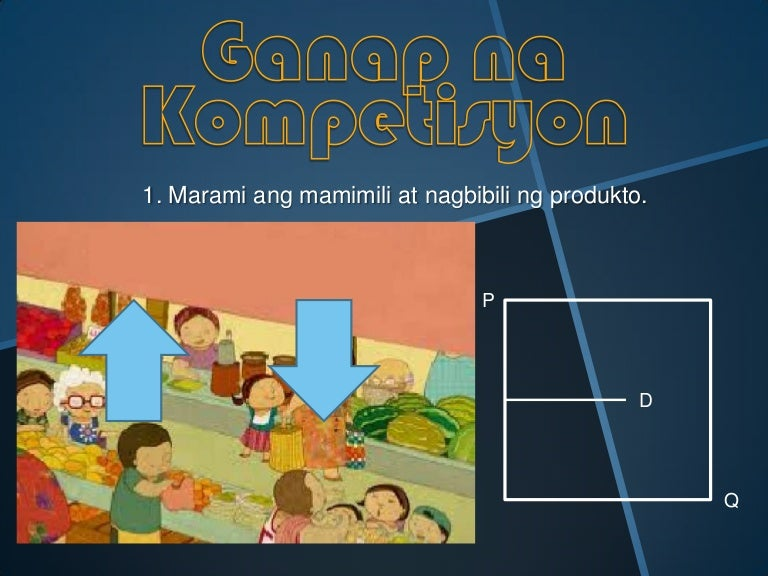
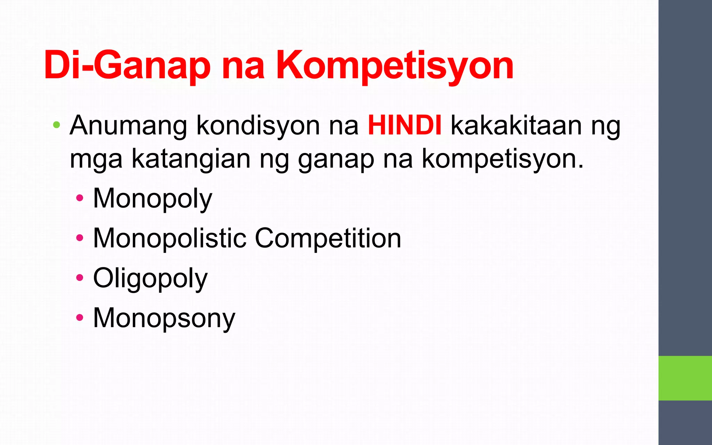

-Bilang at laki ng produsyer o consyumer
Tatlong Elemento sa Pamilihan:
1. Mamimili
2. Produkto
3. Prodyuser
Apat na Uri ng Pamilihan:
1. Lokal
2. Panrehiyon
3. Pambansa
4. Pandaigdigan
Ganap na Kompetisyon
-maraming konsyumer at prodyuser sa industriya
-ang mga produkto ay magkakatulad
-may mga "price takers"
-malayang nagkapapasok at nakalalabas ang mga kalakalan sa produksyon

Di-Ganap na Kompetisyon
-pwede mamimili o produsyer ay apekto ng presyo
